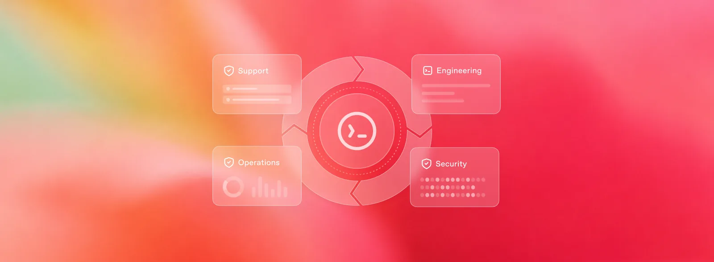
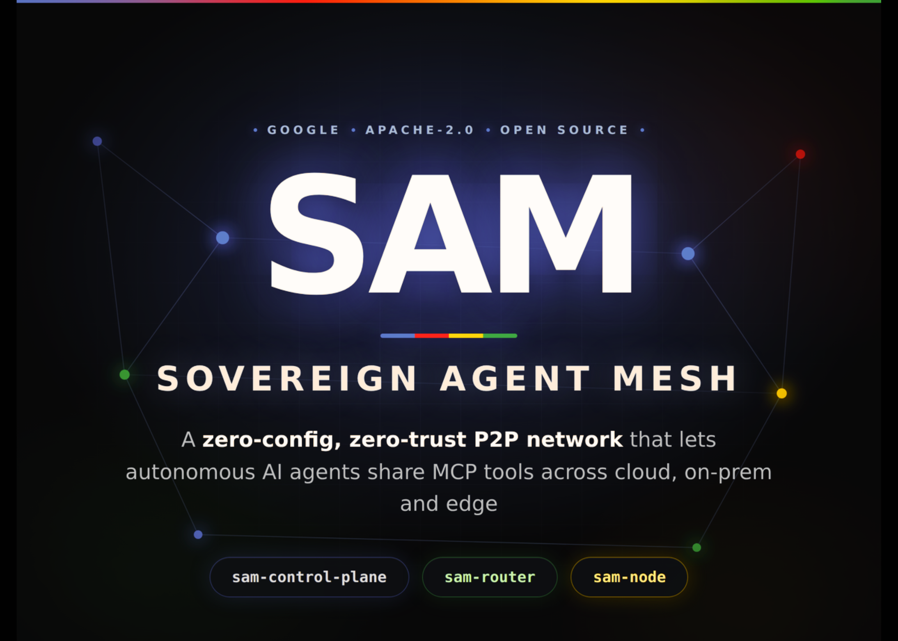

10 툴링 & 보안
266달러 들여 태블릿 루팅한 AI 실험
“Kimi K3는 아마존 OTA 이미지에서 정확한 커널을 꺼내 GPU 취약점을 대조한 끝에 CVE-2022-38181을 찾아냈다.”
Weekly AI Brief
이번 주 흐름은 프론티어 모델 자체의 성능 경쟁보다, 에이전트를 실제 제품과 업무 흐름에 붙이는 쪽으로 더 기울었습니다. OpenAI와 Anthropic은 각자 모델과 도구를 보안, 앱 내 실행, 장기 작업 처리에 맞게 넓혔고, monday.com도 제품 구조를 에이전트 중심으로 다시 짰습니다. 오픈 영역에서는 에이전트 간 연결망과 오픈웨이트 모델의 보안 위험을 둘러싼 논의가 이어졌습니다. 연구 쪽은 로봇 작업 학습과 장기 업무형 에이전트, 시스템 조합형 성능 향상처럼 ‘모델 단독 성능’보다 ‘작업 완주 능력’에 초점을 맞췄습니다. 이번 주에는 모델 자체보다 누가 어떤 업무를 에이전트에 넘기고, 그 과정에서 보안과 통제가 어떻게 붙는지를 먼저 보시면 됩니다.

Editor's Pick
10 툴링 & 보안
“Kimi K3는 아마존 OTA 이미지에서 정확한 커널을 꺼내 GPU 취약점을 대조한 끝에 CVE-2022-38181을 찾아냈다.”
01 프론티어 & 사업 동향
“GPT‑5.6 모델군이 이제 Kiro에서 동작하며, 팀이 소프트웨어를 계획하고 만들고 검토하고 테스트하는 흐름에 들어간다.”
02 프론티어 & 사업 동향
“사용자는 Mythos에 직접 접속하지 않고, 취약점 패치 제안이나 보안 경보 같은 정해진 결과물만 받는다.”
대형 연구소의 모델 공개·프리뷰, 규제/정책, 파트너십 등 산업이 움직인 사건입니다.
01 OpenAI 게시일 2026.08.24
OpenAI가 소프트웨어 개발 에이전트 Kiro에 GPT‑5.
“GPT‑5.6 모델군이 이제 Kiro에서 동작하며, 팀이 소프트웨어를 계획하고 만들고 검토하고 테스트하는 흐름에 들어간다.”
 01
0102 Claude Blog 게시일 2026.08.21
Anthropic이 Claude Mythos 5의 사이버 방어 기능을 Claude Security와 파트너 보안 도구로 확대했다.
“사용자는 Mythos에 직접 접속하지 않고, 취약점 패치 제안이나 보안 경보 같은 정해진 결과물만 받는다.”
 02
0203 OpenAI 게시일 2026.08.19
OpenAI가 Codex를 앱, CLI, IDE 확장을 넘어 오픈소스 에이전트 하네스로 내세웠다.
“OpenAI는 범용 채팅창으로 일을 옮기기보다, 기존 제품 안에 에이전트를 넣으라고 제안한다.”

0304 Claude Blog 게시일 2026.08.20
업무관리 SaaS monday.
“출시 두 달 만에 monday 고객은 플랫폼 안에서 에이전트와 500만 건 이상 상호작용했다.”
 04
04오픈웨이트 모델과 GitHub/Hugging Face 생태계에서 주목할 프로젝트입니다.
05 MarkTechPost 게시일 2026.08.18
구글이 여러 네트워크에 흩어진 AI 에이전트를 안전하게 연결하는 오픈소스 프로젝트 SAM을 공개했다.
“SAM의 대안은 에이전트끼리 MCP 도구를 주고받는 데 맞춘 사설 VPN형 P2P 오버레이다.”

0506 The New Stack 게시일 2026.08.18
OpenAI의 Greg Brockman이 Z.
“접근 통제를 강화하는 진영과 공개 가중치를 푸는 진영의 차이가 사이버 모델에서 더 뚜렷해졌다.”
 06
0607 MarkTechPost 게시일 2026.08.24
Generalist AI가 한 번의 짧은 시연만으로 새 로봇 작업을 배우는 GEN-1.
“GEN-1.5는 3~12초 시연 한 번을 30초 문맥창에 넣으면 새 물리 작업을 바로 수행한다.”
 07
07논문·벤치마크·기법 연구 중 실무 관점에서 볼 만한 결과입니다.
08 The New Stack 게시일 2026.08.21
Nvidia는 자사 에이전트 시스템 AVO를 붙였을 때 Claude Opus 5가 ARC-AGI-3에서 30.
“Nvidia는 Claude Opus 5를 AVO 에이전트 시스템에 얹어 ARC-AGI-3 공개 세트 183개 레벨을 모두 풀었다.”
 08
0809 arXiv 게시일 2026.08.24
Apodex 1.
“Apodex 1.1은 파일, 검색, 코드 실행 환경을 넓히고 여러 에이전트의 분업과 재계획을 함께 학습했다.”
 09
09개발 도구, 인프라, 보안 이슈 등 바로 써먹거나 조심해야 할 소식입니다.
10 github.io 게시일 2026.08.23
한 사용자가 아마존 Fire HD 태블릿을 완전히 통제하려고 AI 모델 4개를 돌린 경험담을 공개했다.
“Kimi K3는 아마존 OTA 이미지에서 정확한 커널을 꺼내 GPU 취약점을 대조한 끝에 CVE-2022-38181을 찾아냈다.”
 10
10